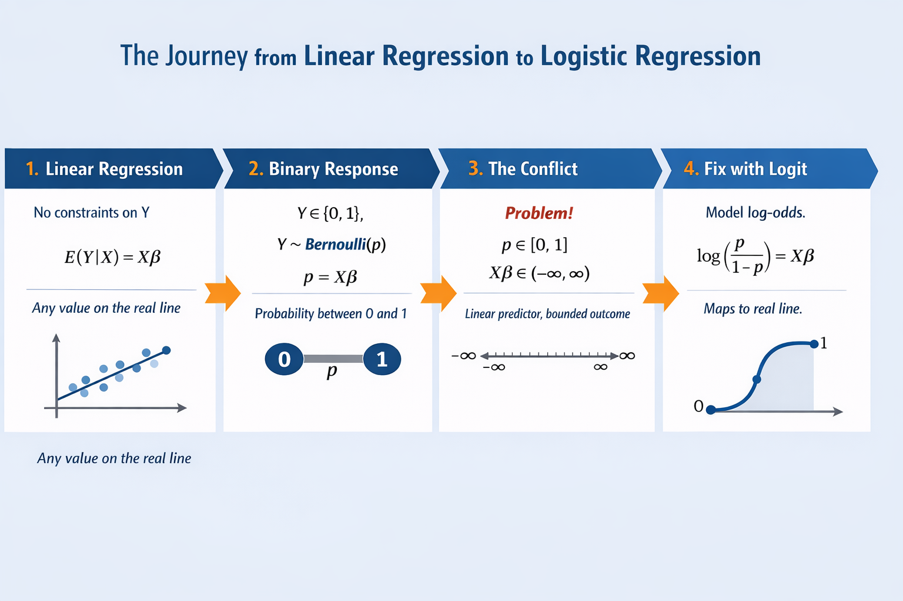

From Linear Regression to Logistic Regression
How probability constraints reshape linearity

Where Everything Starts: Linearity
Linear regression begins with a deceptively simple assumption about the data-generating process:
\[ \mathbb{E}(Y \mid X) = X\beta \]
This assumption is powerful because it aligns perfectly with the nature of the response variable.
In classical linear regression, (Y) can take any value on the real line. There are no natural boundaries. Predicting (-5), (3.2), or (10^6) does not violate any rules.
The linear predictor \(X\beta\) also lives on the real line, so the model is internally consistent.
Linearity works not because it is convenient, but because the mathematics of the response allows it.
A Fundamental Shift: Binary Outcomes
Now imagine a different kind of problem. Instead of predicting a continuous quantity, we are predicting an event.
Did a transaction turn suspicious?
Did a customer default?
Did a user click?
In all these cases, the response variable is binary:
\[ Y \in \{0, 1\} \]
A natural probabilistic assumption is:
\[ Y \sim \text{Bernoulli}(p) \]
Here, the randomness in the data is fully described by a single quantity: the probability \((p = P(Y = 1 \mid X))\).
For a Bernoulli variable, the conditional expectation simplifies beautifully:
\[ \mathbb{E}(Y \mid X) = 1 \cdot P(Y=1 \mid X) + 0 \cdot P(Y=0 \mid X) = p \]
At this point, the expectation is no longer an abstract mean—it is the probability itself.
Why Linear Regression Fails Here
If we try to carry over the linear regression logic unchanged, we would write:
\[ p = X\beta \]
This looks innocent, but it immediately breaks something fundamental.
The probability \(p\) must lie between 0 and 1.
The linear predictor \(X\beta\) has no such restriction, it can be negative, arbitrarily large, or anything in between.
This mismatch is not a technical nuisance; it is a conceptual failure.
A model that predicts probabilities outside \([0,1]\) is not merely inaccurate, it is invalid.
The issue is not with linearity itself.
The issue is where we are trying to apply linearity.
Rethinking the Target: From Probability to Odds
Instead of forcing a linear structure onto the probability, we step back and change perspective.
Rather than modeling (p) directly, we model the odds:
\[ \text{odds} = \frac{p}{1 - p} \]
Odds answer a different question:
“How many times more likely is success than failure?”
Unlike probabilities, odds are not constrained to lie between 0 and 1. They range from:
\[ 0 \quad \text{to} \quad +\infty \]
This is progress. We have removed the upper bound. But odds are still restricted—they cannot be negative.
So linearity still does not quite fit.
The Key Insight: Log-Odds Restore Linearity
To fully remove constraints, we apply one final transformation and take the logarithm of the odds:
\[ \log\left(\frac{p}{1 - p}\right) \]
This quantity, known as the log-odds or logit, can take any real value.
Now, and only now, do both sides of the equation live in the same mathematical space.
This allows us to write:
\[ \log\left(\frac{p}{1 - p}\right) = X\beta \]
This single equation defines logistic regression.
Notice what has happened conceptually. We did not abandon the linear model.
We preserved linearity by applying it to a transformed version of the response.
Linearity survives—but on the log-odds scale.
Interpretation: What the Coefficients Really Mean
This formulation gives logistic regression its distinctive interpretation.
A one-unit increase in a predictor \(X_j\) increases the log-odds by (_j). Exponentiating both sides reveals the effect on odds:
\[ \text{odds} \;\rightarrow\; \text{odds} \times e^{\beta_j} \]
So coefficients no longer represent additive changes in the response. They represent multiplicative changes in odds.
This is why logistic regression coefficients are often reported as odds ratios rather than raw estimates.
Completing the Journey: From Log-Odds Back to Probability
Solving the log-odds equation for (p) gives:
\[ p = \frac{1}{1 + e^{-X\beta}} \]
This is the sigmoid function. It smoothly maps any real-valued input into a valid probability between 0 and 1.
At this point, the journey is complete.
Linear regression and logistic regression are not separate ideas.
Logistic regression is what linear regression becomes when probability theory forces us to respect its boundaries.
The model remains linear in spirit, only the scale changes.